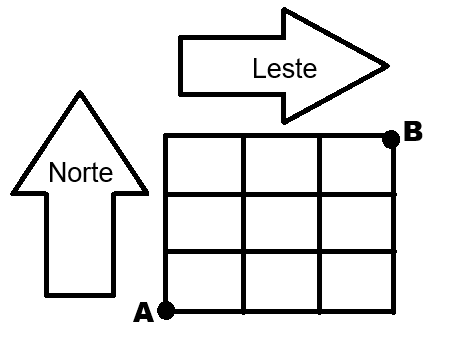
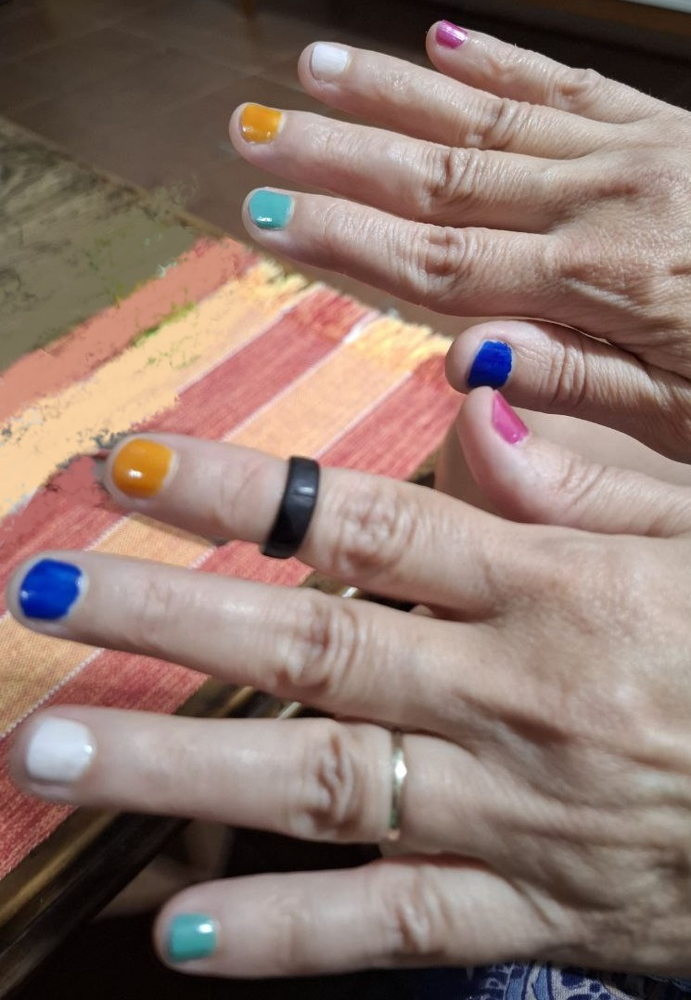
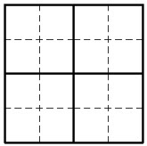

Calendário
Verificações de Aprendizagem
V1 - 21 de novembro (quinta)
V2 - 21 de janeiro (terça)
2a Chamada - 28 de janeiro (terça)
VS - 04 de fevereiro (terça)
Testes
Semana sim, semana não
Terça-feira, no final da aula
Exercícios
Lembre que "fazer" exercícios é igual a "tentar fazer", discutir com outras pessoas, e formular perguntas; e não é "ver a resolução" do exercício (no quadro, no caderno de outra pessoa, no gabarito, etc).
24/9/2024
-
Ler o Capítulo 2 e a Seção 3.1 do Capítulo 3 do livro
Combinatória de Contagem.
-
Estudar o Capítulo 6 do livro
Combinatória de Contagem
e fazer os exercícios 1, 2, e 3 da Seção 6.4 do Capítulo 6 (página 54 e seguintes).
*
Opcional: quem está acompanhando as aulas pelo Morgado, pode fazer os exercícios 1 a 5
[pdf]
da Seção 2.1, o Exercício 1
[pdf]
e os exercícios 4,5,8,10,11,12,13
[pdf],
da Seção 2.2.
26/9/2024
-
Estudar o Capítulo 5 do livro
Combinatória de Contagem
e fazer os exercícios da Seção 5.5 (página 43 e seguintes).
-
Estudar o Capítulo 4 do livro
Combinatória de Contagem
e fazer os exercícios da Seção 4.4 (páginas 32 e 33).
*
Opcional: quem está acompanhando as aulas pelo Morgado,
pode fazer os exercícios 7,9,10,12,13,15
[pdf]
da Seção 2.1
e os exercícios 3 e 9
[pdf],
da Seção 2.2.
1/10/2024
*
Opcional: leia o Capítulo 1 do livro
Paulo Carvalho, Métodos de Contagem e Probabilidade, IMPA/OBMEP, Rio de Janeiro, 2015
[pdf]
e procure identificar os princípios de contagem que são usados na resolução dos problemas
apresentados nos exemplos desse capítulo.
3/10/2024
-
Estudar o Capítulo 10 do livro
Combinatória de Contagem
e fazer os exercícios desse capítulo.
8/10/2024
-
Estudar o Capítulo 8 do livro
Combinatória de Contagem
e fazer os exercícios da Seção 8.4 (página 90 e seguintes).
10/10/2024
-
Fazer os exercícios do
Fantasma Blitz.
22/10/2024
-
Estudar o Capítulo 7 do livro
Combinatória de Contagem
e fazer os exercícios desse capítulo.
24/10/2024
-
Estudar a Seção 7.2 do Capítulo 7 do livro
Combinatória de Contagem
e fazer os exercícios dessa seção.
-
Quantas são os anagramas da palavra ESSES?
29/10/2024

-
Sabendo que as ruas dos quarteirões mostrados na figura
têm mão única: as ruas na horizontal têm o sentido único na direção leste e as ruas na vertical o sentido único para o norte,
de quantas maneiras um carro pode fazer o caminho do ponto A até o ponto B?
31/10/2024
-
Estudar a Seção 7.1 do Capítulo 7 do livro
Combinatória de Contagem
e fazer os exercícios dessa seção.
7/11/2024
-
Exercício proposto pelo Guilherme:
Durante a festa de comemoração dos 10 anos de Pedro, o palhaço que animava a festa jogou para o alto 8 bombons e somente 3 crianças correram para pegá-los. De quantas maneiras diferentes esses 8 bombons podem ser assim distribuídos, sabendo que todos os 8 bombons foram encontrados?
12/11/2024
-
Resolver os exercícios de revisão do Capítulo 6 livro Augusto Morgado e Paulo Carvalho, Matemática Discreta, SBM, 2022 (páginas 139 a 142).
14/11/2024
- Problema 2:
Ao refazer seu calendário escolar para o segundo semestre, uma escola decidiu repor algumas aulas em exatamente quatro dos nove sábados disponíveis
nos meses de outubro e novembro, com a condição de que não fossem utilizados dois sábados consecutivos.
Quantas são as possibilidades distintas de se atender às condições dessa reposição?
- Problema 3:
As provas de Aritmética, Álgebra, Combinatória, Geometria e Trigonometria de um Clube de Matemática devem ocorrer
nas primeiras duas semanas do mês de março.
De quantos modos os professores podem realizar essas provas de modo que não haja provas em dias consecutivos?
- Problema 4:
A professora Sonia planejou ter três encontros semanais com seus alunos do Clube de Matemática durante um ano.
Quantos são os modos de ela fixar os três dias das aulas, se os alunos não podem ter aulas em dias consecutivos?
- Problema 5:
Quatro amigos, Alex, Bruno, Carlos e Daniel, devem se sentar em 15 cadeiras colocadas em torno de uma mesa circular.
De quantos modos esses quatro amigos podem se sentar de modo que não haja ocupação de cadeiras adjacentes?
(Problemas da Sala de Estudos Lemas de Kaplansky - Clubes de Matemática da OBMEP)
Revisão para a V1
Exercícios de Contagem do livro: Paulo Carvalho,
Métodos de Contagem e Probabilidade, páginas 11 a 15, e 36 a 38
[pdf].
28/11/2024 - Permutações caóticas
- Problema 3:
Quantos são os anagramas da palavra CLUBE, nos quais nenhuma das letras está na sua posição original?
- Problema 4:
Professores que utilizam quadro branco contam cada vez mais com novas possibilidades de cores a utilizar.
Isto facilita principalmente àqueles que lecionam geometria ou mesmo os que desejam colorir pelo simples fato da diversidade.
O professor Cleber, muito caprichoso, comprou as 6 canetas abaixo (preta, azul, verde, alaranjada, vermelha e roxa).
Utilizando todas elas na apresentação de certo conteúdo, ele confundiu-se e errou ao colocar a tampa de todas elas,
de forma que nenhuma delas ficou com a tampa correta, correspondente à sua cor.
De quantas maneiras distintas essa confusão pode ocorrer?
- Problema 5 (FUVEST):
Cláudia, Paulo, Rodrigo e Ana brincam entre si de amigo-secreto (ou amigo-oculto).
O nome de cada um deles é escrito em pedaços de papel, que são colocados em uma urna,
e cada participante retira um desses papéis ao acaso.
A probabilidade de que nenhum participante retire seu próprio nome é:
(a) 1/4 (b) 7/4 (c) 1/3 (d) 3/8 (e) 5/12
- Problema 6 (Extraído de Morgado et al.):
Dois médicos devem examinar, durante uma mesma hora, 6 pacientes, gastando 10 minutos com cada paciente.
Cada um dos 6 pacientes deve ser examinado pelos dois médicos.
De quantos modos pode ser feito um horário compatível?
- Problema 7 (UERJ – Adaptado):
Com o intuito de separar o lixo para fins de reciclagem, uma instituição colocou em suas dependências cinco lixeiras de diferentes cores,
de acordo com o tipo de resíduo a que se destinam: vidro, plástico, metal, papel e lixo orgânico.
João coleta cinco materiais (um para cada lixeira).
Sem olhar para as lixeiras, João joga os cinco resíduos, de modo que todas as lixeiras ficam com apenas um resíduo.
Sabendo que apenas dois materiais ficaram nas lixeiras corretas, de quantos modos João pode ter jogado os resíduos?
- Problema 8 (UFSC – Adaptado):
Entre as últimas tendências da moda, pintar as unhas ganha um novo estilo chamado de “dedo único”.
A arte consiste em pintar a unha do dedo anelar de branco e as demais unhas com cores diferentes de branco e distintas entre si.
O mesmo procedimento é repetido na outra mão, porém, excetuando o dedo anelar, os dedos correspondentes não podem possuir a mesma cor.
Renata tem 5 cores diferentes de esmalte (azul, branco, amarelo, rosa e verde) e vai pintar as unhas dessa forma,
para a Parada do Orgulho LGBTQIA+ de Niterói. De quantas maneiras ela pode pintar as unhas no estilo "dedo único"?

- Problema 9:
Seis equipes concorrem em uma competição automobilística, em que cada equipe possui dois carros de mesma cor.
Para a largada são formadas duas colunas de carros lado a lado, de tal forma que cada equipe tenha um carro em cada coluna e,
obrigatoriamente, apenas duas equipes devem possuir seus carros lado a lado.
Determine o número de formações possíveis para a largada.
- Problema 10 (IME):
A figura abaixo é composta de 16 quadrados.
De quantas formas é possível preencher estes quadrados com os números 1, 2, 3 e 4, de modo que um número
não pode aparecer 2 vezes em uma mesma linha, não pode aparecer 2 vezes em uma mesma coluna,
não pode aparecer 2 vezes em cada um dos quatro quadrados demarcados pelas linhas contínuas.

(Problemas da Sala de Estudos
Permutações Caóticas - Clubes de Matemática da OBMEP)
3/12/2024 - Permutações caóticas
Considere a definição a seguir:
Seja n um número natural não nulo.
O número de permutações caóticas de uma sequência de n objetos é:
D(n) = C(n,0)n! - C(n,1)(n-1)! + C(n,2)(n-2)! - C(n,3)(n-3)! + ... + (-1)^n C(n,n)0!
Prove que, para todo número natural não nulo n, temos que:
(a) D(n) = n!(1/0! - 1/1! + 1/2! - 1/3! + ... + (-1)^n 1/n!).
(b) D(1)=0, D(2)=1, e D(n)=(n-1)(D(n-2)+D(n-1)) quando n>2.
5/12/2024 - Relações de recorrência e provas por indução
(1) Considere a definição a seguir:
Seja n um número natural não nulo.
O número mínimo de movimentos para mover a Torre de Hanói de n discos
de um pino a outro é
h(1) = 1, e h(n) = 2h(n-1)+1 quando n>1.
Verifique se, para todo número natural não nulo n, temos que h(n) = 2^n - 1.
(2) Considere a definição a seguir:
Seja n um número natural não nulo.
O número de maneiras distintas de ordenar n objetos é
o(1) = 1, e o(n) = n . o(n) quando n>1.
Prove que, para todo número natural não nulo n, temos que o(n) = n!
(3) Encontre uma relação de recorrência para:
(a) a quantidade l(n) de configurações possíveis de n lâmpadas dispostas em linha em uma bancada,
cada uma podendo estar acesa ou apagada, de modo que não haja lâmpadas adjacentes acesas,
(b) a quantidade d(n) de diagonais de um polígono convexo de n lados,
(c) a quantidade a(n) de apertos de mão entre as n pessoas convidadas de uma festa em que
todas as pessoas se cumprimentaram, exatamente uma vez, com um aperto de mão,
(d) a quantidade b(n) de sequências de zeros e uns de tamanho n,
(e) a quantidade i(n) de sequências de zeros e uns de tamanho n, que possuem um número ímpar de zeros.
10/12/2024 - Relações de recorrência e provas por indução
(1) A sequência de números triangulares é definida pela relação de recorrência a seguir:
T(1) = 1, e T(n) = T(n-1)+n quando n>1.

(a) Mostre que, para todo número natural não nulo n, temos que T(n) = n(n+1)/2.
(b) Mostre também que, para todo número natural não nulo n, temos que 1+2+3+...+n = n(n+1)/2.
(2) A sequência de números quadrados é apresentada a seguir:

Encontre uma relação de recorrência para os números quadrados Q(n).
(a) Mostre que, para todo número natural não nulo n, temos que Q(n) = n^2.
(b) Mostre também que, para todo número natural não nulo n, T(n)+T(n+1)=Q(n)
(a soma de números triangulares consecutivos é um número quadrado).
* Mais exercícios (opcionais)
. Campeonato Carioca Feminino 2024
. Fantasma Blitz
. Quadradinhos da Vovó
. Sorteio com dado
.
Testes
. Teste 1
(sugestão de resolução)
. Teste 2
(sugestão de resolução)
. Teste 3
(sugestão de resolução)
* Capítulo 6 do Augusto Morgado e Paulo Carvalho, Matemática Discreta, Coleção Profmat, SBM, 2022 (opcional) [pdf].
Resultados
Referências
- Márcia Cerioli e Petrucio Viana, Combinatória de Contagem, Minicurso do II Colóquio de Matemática da Região Sul, Universidade Estadual de Londrina, 2012, disponível em http://www.uel.br/eventos/colmatsul/ (MC5 - Introdução aos Princípios de Contagem, na aba Minicursos).
- Augusto Morgado et al., Análise Combinatória e Probabilidade, SBM, Rio de Janeiro, 1991.
- Edward Scheinerman, Matemática Discreta, uma Introdução, 2a ed., Cengage Learning, São Paulo, 2011.
- José Plínio Santos, Margarida Mello, Idani Murari, Introdução à Análise Combinatória, 4a ed., Ciência Moderna, Rio de Janeiro, 2007.
- Paulo Carvalho, Métodos de Contagem e Probabilidade, IMPA, Rio de Janeiro, 2015. [pdf]
- Leonara Alves e Renata de Freitas, Método de Contagem por Princípios: resolução de exercícios, UFF, Niterói, 2015. [slides]
Observações
- Faremos duas verificações de aprendizagem: (V1) e (V2), e seis testes: (T1), (T2), (T3), (T4), (T5), e (T6). Cada teste terá o valor de 2,0 pontos e a soma (T) = (T1) + (T2) + (T3) + (T4) + (T5) + (T6) vai contar como uma das notas para compor a média. A média (M) será a média aritmética entre (V1), (V2), e (T): (M) = (V1)+(V2)+(T) / 3.
- A vista de prova acontecerá sempre na aula seguinte à aplicação de cada verificação de aprendizagem.
- A tolerância máxima de atraso em dias de verificação de aprendizagem é de 30 minutos. Por causa disso, não é permitido sair antes de decorridos 30 minutos do início da aula em dias de verificação de aprendizagem.
- Não é permitido sair e retornar à sala em dias de verificação de aprendizagem (salvo em situação de urgência).
- Não é permitido usar aparelhos eletrônicos (calculadora, celular, relógio, etc) durante a aplicação de uma verificação de aprendizagem.
- A 2a Chamada está aberta a todes e obrigatoriamente substitui uma das notas anteriores, (V1) ou (V2) ou (T), mesmo que a nota da 2a Chamada seja menor que as outras. Após decorridos 30 minutos de prova, você poderá optar por não fazer a 2a Chamada (se optar por não fazer, não assinará a lista de presença).
- Está aprovade quem tiver média maior ou igual a 6,0 e frequência igual ou superior a 75% (que corresponde a no máximo 7 faltas).
- A VS - Verificação Suplementar seguirá as regras usuais da UFF: quem tiver frequência igual ou superior a 75% e média entre 4,0 e 5,9 pode fazer a VS, e estará aprovade se tiver nota maior ou igual a 6,0 na VS.
- Só poderá fazer uma verificação de aprendizagem quem tiver frequência suficiente (número de faltas inferior a 25%, que corresponde a no máximo 7 faltas).
- Qualquer dúvida, me escreva: renatafreitas@id.uff.br.
A propósito do método de contagem por princípios, vejam esse trecho de um texto que o Professor Edsger W. Dijkstra escreveu para sua turma (a versão em português é minha):
"(...) Just as a professor at a conservatory represents a musical style (to the extent that it is often possible to identify the master by listening to his pupils), I represent a mathematical style. It is up to you to decide later to what degree to adopt and to improve it. One thing, however, you are not allowed to do, viz. to reject it offhand for the sole reason that it does not reflect the way of doing mathematics you are used to. Of course it doesn't! That is precisely why you are here. This whole course is no more and no less than an invitation to take the experiment of changing some of your reasoning habits and adopting some new modes of expression. As you take the experiment you will notice that it is not acquiring the new habits that presents the greatest problem, for that is getting rid of the old ones. Perfecting oneself is as much unlearning as it is learning. (...)"
Assim como um professor em um conservatório representa um estilo musical (a ponto de frequentemente ser possível identificar quem ensinou ao ouvir tocar o/a aprendiz), eu represento um estilo de [fazer] matemática. Cabe a você decidir, mais tarde, o quanto vai adotar meu estilo e aprimorá-lo. Uma coisa, no entanto, você não pode fazer, que é rejeitar meu estilo de antemão, pela única razão de que ele não reflete a maneira como você está acostumado a fazer matemática. É claro que não reflete! Esta é precisamente a razão pela qual você está aqui [na minha turma]. Este curso é nada mais nada menos que um convite para experimentar uma mudança de hábitos de raciocínio e adotar algumas novas maneiras de se expressar. Conforme você for experimentando, você vai perceber que não é a aquisição de novos hábitos que representa o maior problema, mas, sim, se livrar dos hábitos antigos. Aperfeiçoar-se é muito mais desaprender do que aprender.